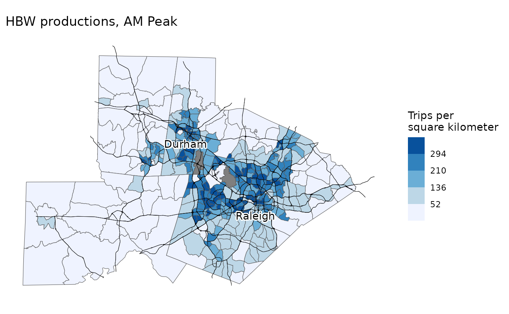
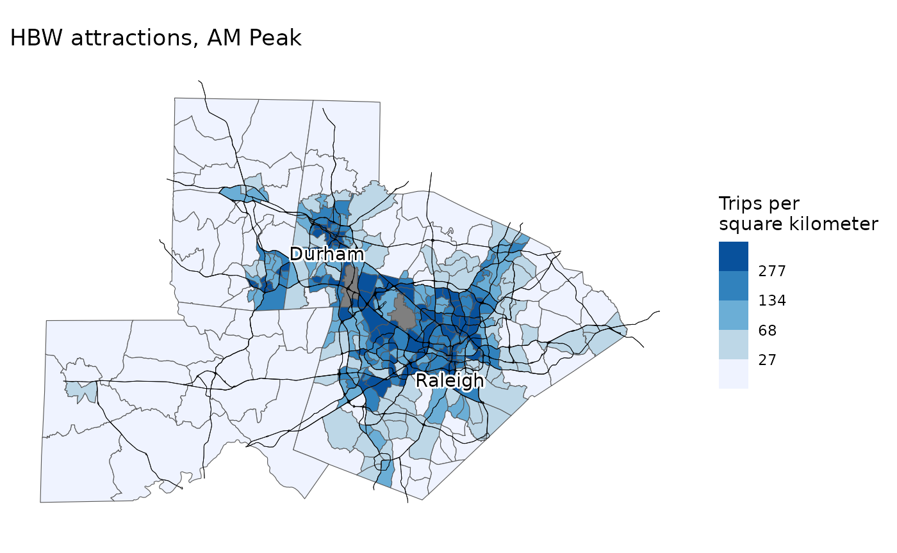
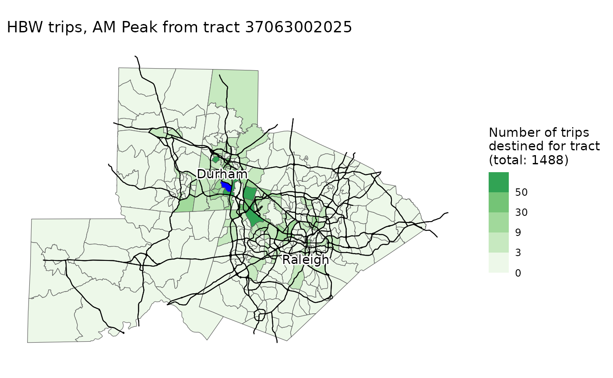
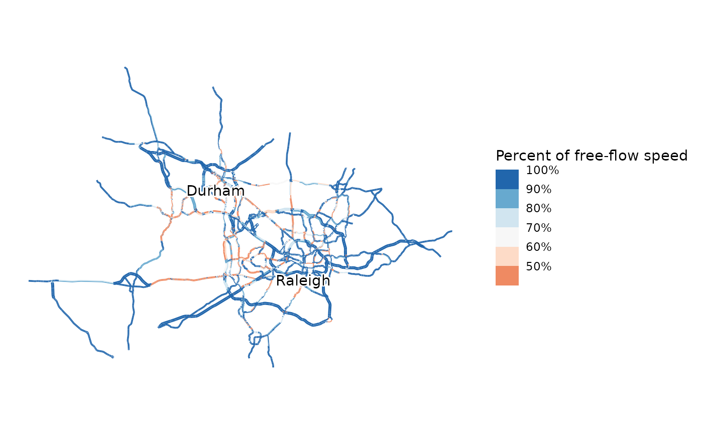
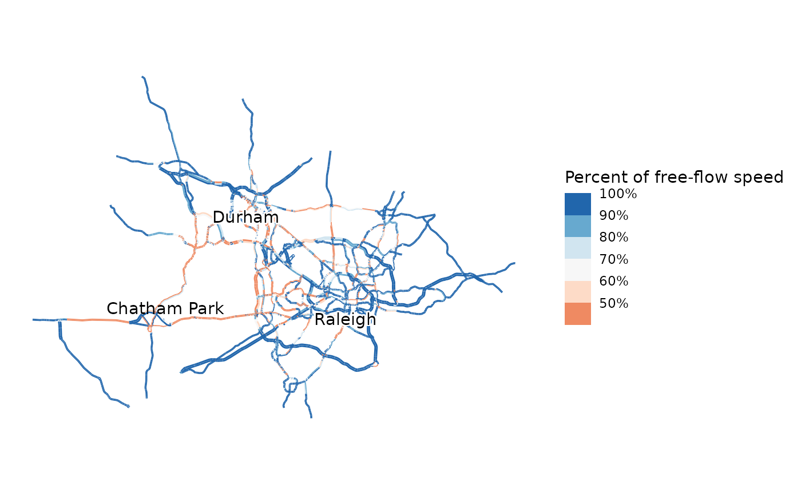
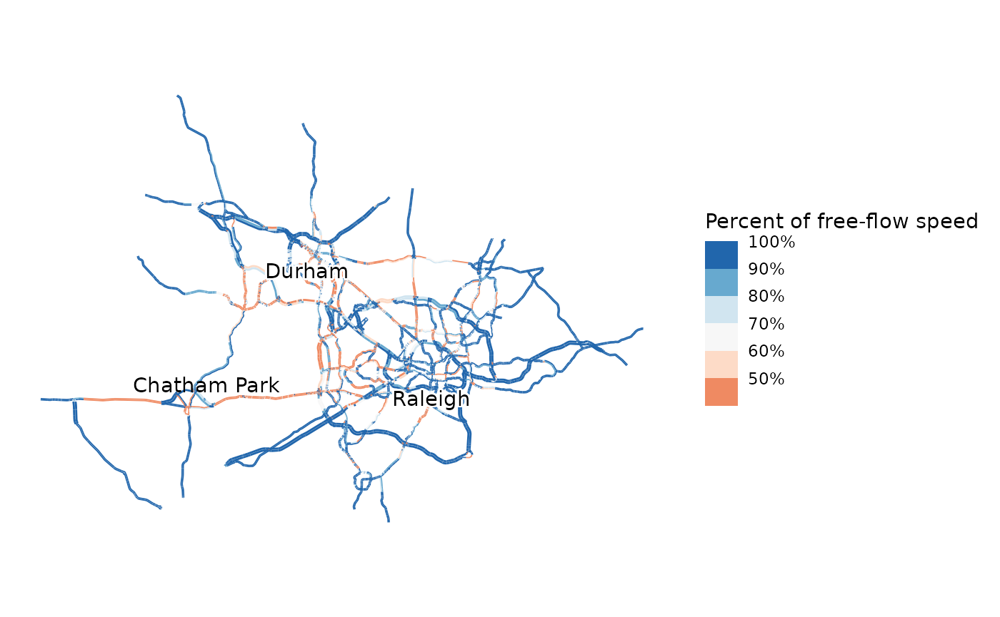

Learning module
classroom_implementation.RmdIntroduction
My First Four-Step Model is a software package that allows students with minimal experience and consumer-grade computer hardware to run a simple four-step travel demand model. Specifically, it is designed to address these student learning outcomes:
- Have a basic understanding of the structure and mathematics of travel demand model,
- Understand the types of scenarios travel demand models are appropriate for,
- Understand the limitations and uncertainty of travel demand modeling, and
- Be able to have constructive conversations with travel modelers.
It is implemented as an R package (R Core Team 2026), which has several advantages. R is a free, open-source, and cross-platform statistical programming language, allowing students to run it on their own computers regardless of configuration. Furthermore, R is becoming the lingua franca of quantitative urban planning. Using the My First Four-Step Model package in an assignment gives students a gentle introduction to the language and potentially piques their interest in learning more. The package has several key design goals:
- The four steps of the model map directly onto four functions in the package;
- Any place where there is a tradeoff between simplicity and predictive accuracy, simplicity is chosen;
- It can be estimated for any location in the United States using only publicly-available data;
- There are intuitive tools to visualize model inputs, outputs, and parameters, so students can interpret and understand the model;
- Preparing land-use and transportation scenarios is simple;
- It runs on any computer a student is likely to have (including Windows, Macs, and Chromebooks); and
- It depends only on R itself and common R packages that are easily installed from the Comprehensive R Archive Network (CRAN).
To meet these goals, the model is highly simplified, and this certainly affects its predictive accuracy, but predictive accuracy is not one of the goals. Epstein (2008) lists 16 reasons to build models other than prediction. One of them, train practitioners, is the primary goal of this model. This goal does not depend on high predictive accuracy. Computer games and simulations have a long history as educational tools
I use the package in my Planning Methods course in the Department of City and Regional Planning at the University of North Carolina at Chapel Hill. This is an introductory master’s level course which all planning students (not only those in transportation) take, generally during their first semester. In the course, I spend a week discussing transportation planning and engineering. I give a single hour-and-fifteen-minute lecture on transportation modeling, covering primarily the four-step model, but with a nod to activity-based models. We discuss the general structure of the model. We cover some basic mathematical underpinnings of discrete-choice models. We discuss travel surveys and how they are used in model development.
I then have an assignment where all students run and interpret the output of a four-step model. Specifically, students first run a baseline model. They then change land use inputs to reflect Chatham Park, a large proposed housing development in Pittsboro, NC. Pittsboro is a town that is quickly becoming an exurb of the Research Triangle. For each step of the model, I have 1–2 homework questions. These questions cover interpretation the coefficients of the constituent models, and what the outputs indicate about the transportation system and differences between scenarios. The model is estimated for the Research Triangle region because that is where my university is located, so it is a region my students are familiar with. Estimation for other regions is straightforward.
There is also an extra credit section worth two points where students run their scenario again with a network where US 15-501, the main highway between Pittsboro and Chapel Hill, is widened from two to three lanes. I have them interpret how congestion changes in this scenario. Modeled results of widening projects are often overstated due to induced demand, the phenomenon where building more roadway capacity induces more people to take trips on that road. Like many four-step models, My First Four-Step Model does not account for induced demand. I have students discuss how this biases the results.
I provide the students with an R file to run the model, which is available here; most of the code in this file is also included inline in this document. The full homework assignment is available here.
Students do well on this assignment. In Spring 2025, the mean score was 5.96 (n=42, s.d.=1.51, median=5.5, 25th percentile=5, 75th percentile=7.45). 20 students (48%) attempted the two-point extra credit section looking at highway widening. Unfortunately, this class did not cover travel demand modeling prior to the introduction of My First Four-Step Model, so it is not possible to evaluate how the tool has changed learning outcomes.1
The goal is to enable students in all specializations, not just transportation, to understand basic demand model structure and have productive conversations with modelers. For students who want to work more closely with models in their careers, our program also teaches a semester-long travel demand modeling course using a more complex model developed in TransCAD. Most transportation specialization students take this course later in their program.
Installation
All students already have R and RStudio installed on their machines from a previous exercise on linear regression. Installing My First Four-Step Model is simple; students run the following R code in the console to install the package:
install.packages("MyFirstFourStepModel",
repos = c("https://mattwigway.r-universe.dev", getOption("repos")))This installs a pre-compiled R package containing the model. It also
automatically installs the R packages MyFirstFourStepModel
depends on—notably tidyverse (Wickham et al. 2019), sf (Pebesma and Bivand 2023), igraph
(Csardi and Nepusz 2006),
readxl and writexl (Wickham and Bryan 2023; Ooms 2024),
tidycensus (Walker and Herman
2024), tigris (Walker
2024), and nnet (Venables and
Ripley 2002).
The development version can be installed from Github. There is a
small amount of compiled Rust code using extendr (Reimert et al. 2024), which is used to improve
performance of the assignment, IPF, and model serialization algorithms,
so a Rust development environment is needed. Most users will want to use
the compiled version above, which does not require a Rust development
environment, but to install from Github you would use the following
code:
devtools::install_github("mattwigway/MyFirstFourStepModel")Loading the package and the model
Next, students load the MyFirstFourStepModel package,
and an already-estimated model. Most model users will never estimate a
model themselves, so I provide an already-estimated model for the
Research Triangle region of North Carolina. The model can be read either
from a local file or directly from an https URL. Reading
directly from a URL requires the instructor to have access to a server,
but avoids needing to troubleshoot local file paths. The URL included
below is a live URL with the model for the Research Triangle, which you
are welcome to use in your own teaching.
library(MyFirstFourStepModel)
model = load_model("https://files.indicatrix.org/chatham_park.mf4sm")Trip generation
The first step of the four-step process is trip generation. Trip generation is done at the household level using linear regression. I use linear regression rather than traditional cross-classification or more complex regression methods because of its ease of interpretation, and because I teach demand modeling shortly after teaching linear regression. Before running the trip generation model, I have students view the trip generation model for AM Peak home-based work trips, using the code below, and interpret the coefficients.
summary(model$production_functions$`AM Peak`$HBW)
#>
#> Call:
#> lm(formula = trip_count ~ vehicles + hhsize + factor(income) +
#> HTRESDN + workers, data = regdata)
#>
#> Residuals:
#> Min 1Q Median 3Q Max
#> -1.25497 -0.37852 -0.00032 0.18240 2.77999
#>
#> Coefficients:
#> Estimate Std. Error t value Pr(>|t|)
#> (Intercept) -3.189e-03 1.849e-02 -0.172 0.863078
#> vehicles 2.526e-02 8.503e-03 2.971 0.002979 **
#> hhsize -3.496e-02 7.464e-03 -4.683 2.87e-06 ***
#> factor(income)100000 7.321e-02 1.982e-02 3.693 0.000223 ***
#> factor(income)35000 2.304e-02 1.555e-02 1.481 0.138563
#> factor(income)75000 8.155e-02 2.167e-02 3.764 0.000169 ***
#> HTRESDN -2.818e-06 7.919e-06 -0.356 0.721987
#> workers 4.019e-01 8.243e-03 48.763 < 2e-16 ***
#> ---
#> Signif. codes: 0 ‘***’ 0.001 ‘**’ 0.01 ‘*’ 0.05 ‘.’ 0.1 ‘ ’ 1
#>
#> Residual standard error: 0.4876 on 7138 degrees of freedom
#> Multiple R-squared: 0.3376, Adjusted R-squared: 0.337
#> F-statistic: 519.8 on 7 and 7138 DF, p-value: < 2.2e-16I similarly have them interpret one of the regressions for attraction functions:
summary(model$attraction_functions$`AM Peak`$HBW)
#>
#> Call:
#> lm(formula = HBW ~ C000 + CNS07 + CNS15 + CNS18, data = attract_filtered)
#>
#> Residuals:
#> Min 1Q Median 3Q Max
#> -3197.5 -659.0 -343.8 -43.7 8065.0
#>
#> Coefficients:
#> Estimate Std. Error t value Pr(>|t|)
#> (Intercept) 279.14694 123.51096 2.260 0.024724 *
#> C000 0.62690 0.07337 8.544 1.6e-15 ***
#> CNS07 0.14668 0.45880 0.320 0.749472
#> CNS15 -0.52962 0.14650 -3.615 0.000367 ***
#> CNS18 -1.84046 0.63814 -2.884 0.004287 **
#> ---
#> Signif. codes: 0 ‘***’ 0.001 ‘**’ 0.01 ‘*’ 0.05 ‘.’ 0.1 ‘ ’ 1
#>
#> Residual standard error: 1458 on 237 degrees of freedom
#> (493 observations deleted due to missingness)
#> Multiple R-squared: 0.3099, Adjusted R-squared: 0.2982
#> F-statistic: 26.6 on 4 and 237 DF, p-value: < 2.2e-16Once students have interpreted the regressions, I have them run the trip generation step. True to the design goals, this requires only a single function.
productions_attractions = trip_generation(model, model$scenarios$baseline)Students can then map the number of trips produced in each Census
tract in the region using the map_trip_generation function
as shown below.
map_trip_generation(
model,
productions_attractions,
"Productions",
"AM Peak",
"HBW"
)
I likewise have them map the trips attracted:
map_trip_generation(
model,
productions_attractions,
"Attractions",
"AM Peak",
"HBW"
)
Trip distribution
Trip distribution uses a simple gravity model, with different parameters estimated for home-based work, home-based other, and non-home-based trips. I first have students print the parameters using the code below, and interpret them.
model$distribution_betas
#> $HBW
#> [1] -1.23908
#>
#> $HBO
#> [1] -1.884465
#>
#> $NHB
#> [1] -1.69133Then, they can run the trip distribution step with the following code:
flows = trip_distribution(
model,
model$scenarios$baseline,
productions_attractions
)Students can then map the trip distribution results for any origin Census tracts, and interpret them. The code below shows the results for AM Peak home-based work trips originating from a tract in suburban Durham; results show that many trips stay local, but there are also pockets of activity in further-flung large employment centers (e.g., Raleigh).
map_trip_distribution(
model,
flows,
"AM Peak",
"HBW",
origin_tract = "37063002025"
)
Mode choice
The mode choice model is a multinomial logit model with four modes: walk, bike, transit, and drive. Since the model is estimated from public data, there are minimal attributes of each individual trip available, so the model is very simple and primarily based on Euclidean distance between the origin and destination. I give a very basic expanation of the multinomial logit model, highlighting commonalities with linear regression, and have students print the mode choice model using the code below, and interpret a few coefficients :
summary(model$mode_choice_models$HB)
#> Call:
#> multinom(formula = choice ~ HTRESDN + dist_km + factor(time_period) +
#> factor(trip_type), data = trips_hb)
#>
#> Coefficients:
#> (Intercept) HTRESDN dist_km factor(time_period)Midday
#> Transit -2.6374784 0.0002524090 -0.02035649 -0.44863316
#> Walk -0.6017808 0.0001260678 -0.46964729 -0.37969273
#> Bike -4.6993765 0.0004495407 -0.06093409 -0.08881933
#> factor(time_period)PM Peak factor(time_period)Overnight
#> Transit -1.78844546 -2.11826678
#> Walk -0.24673230 -0.05365713
#> Bike -0.05846704 -0.23981241
#> factor(trip_type)HBW
#> Transit -1.3445436
#> Walk -0.9591145
#> Bike -0.1504638
#>
#> Std. Errors:
#> (Intercept) HTRESDN dist_km factor(time_period)Midday
#> Transit 0.06385504 3.892784e-05 0.003691086 0.06903190
#> Walk 0.05490998 2.562772e-05 0.012668493 0.05856487
#> Bike 0.08812173 5.064156e-05 0.012339821 0.09624378
#> factor(time_period)PM Peak factor(time_period)Overnight
#> Transit 0.12835536 0.03279326
#> Walk 0.06382929 0.06986401
#> Bike 0.09114406 0.01182716
#> factor(trip_type)HBW
#> Transit 0.13045904
#> Walk 0.09189641
#> Bike 0.01939985
#>
#> Residual Deviance: 23683.37
#> AIC: 23725.37I then have students run the mode choice step and calculate mode shares, using the code below:
flows_by_mode = mode_choice(model, model$scenarios$baseline, flows)
get_mode_shares(flows_by_mode)
#> # A tibble: 1 × 4
#> Car Bike Walk Transit
#> <dbl> <dbl> <dbl> <dbl>
#> 1 0.916 0.00559 0.0523 0.0258Network assignment
The final step of the model is network assignment. A simple
Frank-Wolfe static traffic assignment algorithm is used to assign trips
to the network. Since network assignment is time consuming, a relatively
simple network is used. The network used in the Research Triangle
example model has 7529 nodes and 10497 edges. The code below performs
assignment for the PM Peak. To maximize network assignment performance,
a small amount of code written in the Rust language (Klabnick et al. 2025) is used to efficiently
process routing results; this code is pre-compiled and will be installed
automatically when MyFirstFourStepModel is installed.
pm_network_flows = network_assignment(
model,
model$scenarios$baseline,
model$networks$baseline,
flows_by_mode,
"PM Peak"
)
#> [1] "Iteration 1 relative gap: 0.4910"
#> [1] "Iteration 2 relative gap: 0.2382"
#> [1] "Iteration 3 relative gap: 0.1072"
#> [1] "Iteration 4 relative gap: 0.0702"
#> [1] "Iteration 5 relative gap: 0.0385"
#> [1] "Iteration 6 relative gap: 0.0285"
#> [1] "Iteration 7 relative gap: 0.0183"
#> [1] "Iteration 8 relative gap: 0.0133"
#> [1] "Iteration 9 relative gap: 0.0108"
#> [1] "Assignment converged in 39.1 seconds at iteration 10 with relative gap 0.0077"
map_congestion(model, model$networks$baseline, pm_network_flows)
Agencies are increasingly interested in vehicle miles traveled. The assignment step can also estimate VMT by period using the code below. For the PM Peak in the Research Triangle, this is estimated to be 7 million miles/day. The 2017 Local Area Transportation Characteristics for Households (LATCH) statistics estimate total VMT in the Triangle region to be 26 million miles/day (author calculations from Bureau of Transportation Statistics 2024), so 7 million in the PM Peak is reasonable.
estimate_vmt(model, model$networks$baseline, pm_network_flows, "PM Peak")
#> [1] 7790382Land use scenarios
Travel demand models are primarily used to evaluate scenarios. After
running the baseline model, I have students run the model again with a
land use scenario that is included in the model they loaded. This land
use scenario models the real-world Chatham Park development, which will
eventually add 22,000 new homes to Pittsboro, NC and the surrounding
region. This increases the population of this area several times over.
This is done by simply replacing model$scenarios$baseline
with model$scenarios$chatham_park. I then have students
again map congestion and compare to baseline conditions.
cp_productions_attractions = trip_generation(
model,
model$scenarios$chatham_park
)
cp_flows = trip_distribution(
model,
model$scenarios$chatham_park,
cp_productions_attractions
)
cp_flows_by_mode = mode_choice(
model,
model$scenarios$chatham_park,
cp_flows
)
# This step may again take a few minutes
cp_link_flows = network_assignment(
model,
model$scenarios$chatham_park,
model$networks$baseline,
cp_flows_by_mode,
"PM Peak"
)
#> [1] "Iteration 1 relative gap: 0.5242"
#> [1] "Iteration 2 relative gap: 0.4323"
#> [1] "Iteration 3 relative gap: 0.1606"
#> [1] "Iteration 4 relative gap: 0.0810"
#> [1] "Iteration 5 relative gap: 0.0405"
#> [1] "Iteration 6 relative gap: 0.0341"
#> [1] "Iteration 7 relative gap: 0.0252"
#> [1] "Iteration 8 relative gap: 0.0198"
#> [1] "Iteration 9 relative gap: 0.0115"
#> [1] "Iteration 10 relative gap: 0.0105"
#> [1] "Assignment converged in 44.2 seconds at iteration 11 with relative gap 0.0064"
# This maps the congestion under the scenario, and also labels the location of Chatham Park
map_congestion(model, model$networks$baseline, cp_link_flows) +
ggplot2::annotate("text", -8809915, 4267605, label = "Chatham Park")
Given the brief treatment of modeling overall, I don’t have students create their own scenarios; I pre-create the Chatham Park scenario and distribute it with the model. In more advanced classes, it may be appropriate to have students create their own scenarios. Details of how to create scenarios is in the scenarios vignette.
Network scenarios
The other type of scenario frequently evaluated with travel demand models is changes to the transportation network. In the extra credit section, I have students re-run the model with a scenario that widens and converts to a freeway US 15-501, the main highway connecting Chatham Park to Chapel Hill, the location of the University of North Carolina. I also provide this network scenario with the model; instructions for creating your own network scenarios are in the scenarios vignette. I have students run the code below to run the model with both the land-use scenario and the widened highway:
widen_productions_attractions = trip_generation(
model,
model$scenarios$chatham_park
)
widen_flows = trip_distribution(
model,
model$scenarios$chatham_park,
widen_productions_attractions
)
widen_flows_by_mode = mode_choice(
model,
model$scenarios$chatham_park,
widen_flows
)
widen_link_flows = network_assignment(
model,
model$scenarios$chatham_park,
model$networks$widen_15_501,
widen_flows_by_mode,
"PM Peak"
)
#> [1] "Iteration 1 relative gap: 0.5492"
#> [1] "Iteration 2 relative gap: 0.3553"
#> [1] "Iteration 3 relative gap: 0.2121"
#> [1] "Iteration 4 relative gap: 0.1357"
#> [1] "Iteration 5 relative gap: 0.0889"
#> [1] "Iteration 6 relative gap: 0.0413"
#> [1] "Iteration 7 relative gap: 0.0390"
#> [1] "Iteration 8 relative gap: 0.0219"
#> [1] "Iteration 9 relative gap: 0.0308"
#> [1] "Iteration 10 relative gap: 0.0200"
#> [1] "Iteration 11 relative gap: 0.0137"
#> [1] "Iteration 12 relative gap: 0.0144"
#> [1] "Iteration 13 relative gap: 0.0109"
#> [1] "Iteration 14 relative gap: 0.0133"
#> [1] "Iteration 15 relative gap: 0.0102"
#> [1] "Assignment converged in 69.0 seconds at iteration 16 with relative gap 0.0089"
# This maps the congestion under the scenario (Extra credit)
map_congestion(model, model$networks$widen_15_501, widen_link_flows) +
ggplot2::annotate("text", -8809915, 4267605, label = "Chatham Park")
I then have them interpret how congestion has changed, and what assumptions are being made about induced demand. Insufficient accounting for induced demand—the phenomenon of roadway expansion leading to additional demand (Downs 2004)—is a common criticism of four-step models. This is a particular concern among planning students. My First Four-Step Model is worse even than most production travel models; it does not account for induced demand at all. While most models would use estimates of network travel time and travel cost in the distribution and mode choice, and thus be at least somewhat sensitive to changes in the network, My First Four-Step Model relies entirely on crow-flies distances.
This
work © 2026 by Matt
Bhagat-Conway is licensed under
CC BY
4.0